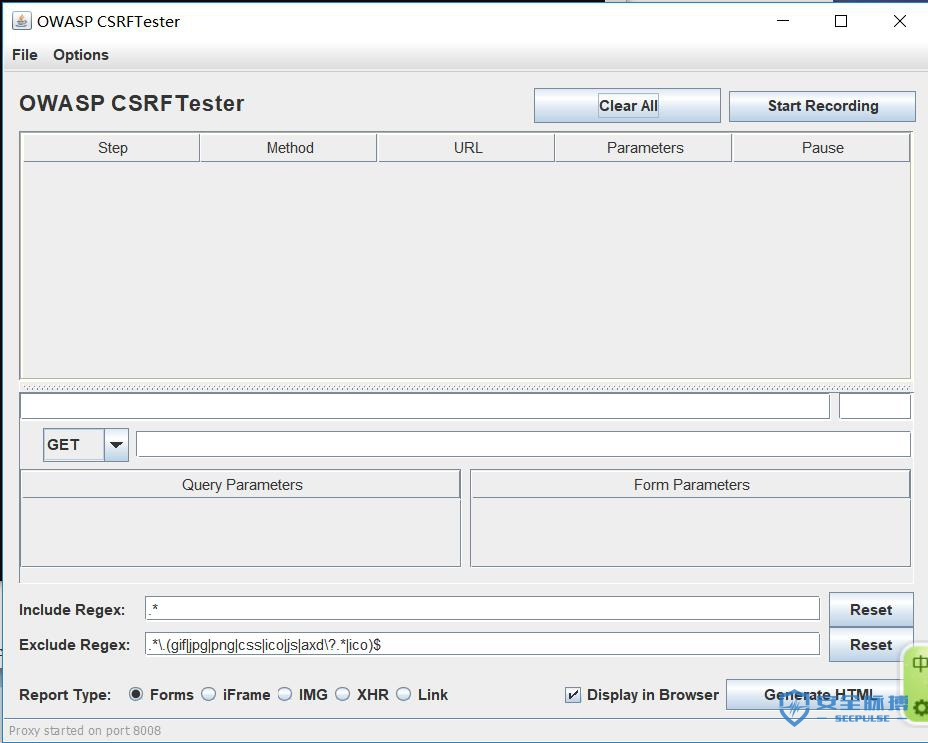

CSRF漏洞笔记+靶场实战
CSRF漏洞部分
CSRF简述
漏洞原理
CSRF攻击建立在浏览器和Web服务器的对话之中，并且能欺骗用户访问url，发起的目标是通过伪造的用户请求，该请求不是用户想发出去的请求，对服务器或服务来说，该请求是完全合法的请求，但却完成了攻击者的期望操作。
从代码上看，CSRF能攻击成功是攻击者猜到了你重要参数，因而伪造请求。
可以这么理解CSRF攻击：攻击者盗用了你的身份，以你的名义进行某些非法操作。CSRF能够使用你的账户发送邮件，获取你的敏感信息，甚至盗走你的账户
浏览器Cookie机制：
cookie的两种表现形式：一种是本地Cookie，又称持久性Cookie；
一种是临时Cookie，又称Session Cookie；：
漏洞利用条件
1.攻击者必须在目标站点找到一个表单的提交入口，或者有类似的URL(例如用来转钱，修改受害者邮箱或者密码)
2.目标站点不能有检测referer头操作，或者被攻击者的浏览器允许referer欺骗
3.攻击者必须了解表单或者URL参数中的正确的值，如果有秘密验证值或者ID，攻击者没有猜对，攻击者很可能不成功。
4。攻击者必须诱使受害者访问有恶意代码的页面，并且此时受害者已经登录到目标站点。
漏洞利用场景
- 有意义的操作（如修改密码）
- 验证过于简单（参数固定、我们可以设置参数）
漏洞类型
- GET型
- POST型
检测方法
1.手工检测：抓包查看是否存在无token无referer验证这种情况。存在的话就会有CSRF漏洞
如果存在无token有referer验证这种情况时，我们可以尝试空referer绕过或者尝试抓包伪造referer
2.半自动检测：常用半自动检测漏洞的软件有CSRFTester,CSRF Request Builder等。
漏洞挖掘：
1、自动化扫描工具
netspark
AWVS
appscan
一般用上列工具可以扫描到网站是否存在CSRF漏洞。但是在工具中添加登录参数可以大大提高挖掘的成功率
2、半自动检测工具
CSRFTester
下载地址：https://www.owasp.org/index.php/File:CSRFTester-1.0.zip
1.安装CSRFTester

打开run.bat就可以打开工具，但是需要java的环境
)
消息框出现该消息时，表示工具已经开始监听本地8008这个端口了，这个时候需要配置浏览器的代理
\2. 设置浏览器代理（搜狗浏览器为例）
点击工具栏–代理设置–添加新代理，将代理进行添加并启用即可
\3. 用户登录
单击“Start Recording”，开启CSRFTester的检测工作，这样以后我们所有访问的URL以及参数都会被记录下来。
\4. 通过CSRFTester抓取和伪造请求
当你登录一个网站账号时，CSRF Tester会进行抓取
我们抓取了该请求，在Step属性中添加请求，然后将Form Parameter中的user等表单中参数进行修改，然后单击Generate HTML按钮（可以选择其他格式：Forms、IFrame等）来产生CSRF攻击脚本。
随机生成了一个攻击脚本，将其上传服务器，发送给受害者即可。
CSRF PoC generator
打开burpsuite，在抓取任意一个HTTP请求中点击右键，选择Engagement tools，然后点击Generate CSRF POC即可生成CSRF POC，
)
这款工具也是根据请求参数生成的POC，可以直接点击test in browser按钮进行测试，点击后会利用这段POC进行攻击。
上列两款工具可以拦截所有的请求，渗透测试人员可以在登录状态下进行修改密码、删除文件等操作，工具便会将发送的请求进行拦截，再通过工具生成的POC便可以验证漏洞是否存在。
1.CSRFTester设置浏览器代理:127.0.0.1:8008，bp是8080
2.登录web应用程序，提交表单，在CSRF工具中修改表单内容，查看是否更改，如果更改就存在CSRF漏洞
3.生成POC
一个wordpress博客为例就存在一个CSRF漏洞
创建用户，bp抓包，修改添加用户的账号密码
[]
发送到CSRF POC
[]
以html形式保存下来，发送给目标用户欺骗他打开，成功创建一个新账户
[]
常见的防御方法：
使用验证码：
验证码强制用户必须和应用进行交互，才能完成最终的请求
验证HTTP referer字段：
HTTP Referer是header的一部分，当浏览器向web服务器发送请求的时候，会带上Referer，通过验证Referer，可以判断请求的合法性，如果Referer是其他网站的话，就有可能是CSRF攻击，则拒绝该请求。
在请求地址中添加token并验证：
在HTTP请求中以参数的形式加入一个随机产生的token，并在服务器端建立一个拦截器来验证这个token，如果请求中没有token或者token不正确，则认为可能是CSRF攻击而拒绝该请求。
DVWA（CSRF部分）
simple:
分析：
我们分析源代码可知，服务器收到修改密码的请求后，会检查参数password_new password_conf是否相同，如果相同，就会修改密码，并没有任何的防CSRF机制，所以我们只需要用户在cookie还有效的时间内在相同的浏览器访问我们给定的url（该操作是服务器对请求的发送者进行了身份验证，检查cookie），就可以实现CSRF攻击，修改用户密码。
漏洞利用
我们可以构造如下URL进行修改密码：
http://localhost/DVWA/vulnerabilities/csrf/?password_new=admin&password_conf=admin&Change=Change#
我们构造一个html表单提交页面
将html文件放入本地网站的根目录下。
我们尝试在本地访问该网页
点击后发现跳转到了DVWA更改密码界面，密码被修改
medium
<?php
if( isset( $_GET[ 'Change' ] ) ) {
// Checks to see where the request came from
if( stripos( $_SERVER[ 'HTTP_REFERER' ] ,$_SERVER[ 'SERVER_NAME' ]) !== false ) {
// Get input
$pass_new = $_GET[ 'password_new' ];
$pass_conf = $_GET[ 'password_conf' ];
// Do the passwords match?
if( $pass_new == $pass_conf ) {
// They do!
$pass_new = ((isset($GLOBALS["___mysqli_ston"]) && is_object($GLOBALS["___mysqli_ston"])) ? mysqli_real_escape_string($GLOBALS["___mysqli_ston"], $pass_new ) : ((trigger_error("[MySQLConverterToo] Fix the mysql_escape_string() call! This code does not work.", E_USER_ERROR)) ? "" : ""));
$pass_new = md5( $pass_new );
// Update the database
$insert = "UPDATE `users` SET password = '$pass_new' WHERE user = '" . dvwaCurrentUser() . "';";
$result = mysqli_query($GLOBALS["___mysqli_ston"], $insert ) or die( '<pre>' . ((is_object($GLOBALS["___mysqli_ston"])) ? mysqli_error($GLOBALS["___mysqli_ston"]) : (($___mysqli_res = mysqli_connect_error()) ? $___mysqli_res : false)) . '</pre>' );
// Feedback for the user
echo "<pre>Password Changed.</pre>";
}
else {
// Issue with passwords matching
echo "<pre>Passwords did not match.</pre>";
}
}
else {
// Didn't come from a trusted source
echo "<pre>That request didn't look correct.</pre>";
}
((is_null($___mysqli_res = mysqli_close($GLOBALS["___mysqli_ston"]))) ? false : $___mysqli_res);
}
?> 分析：
Medium级别的代码检查了保留变量 HTTP_REFERER（http包头的Referer参数的值，表示来源地址）中是否包含SERVER_NAME（http包头的Host参数，及要访问的主机名，这里是192.168.153.130），希望通过这种机制抵御CSRF攻击
漏洞利用：
我们用burp对数据进行抓包，不断对referer进行修改，最后发现referer需包含我们host名
查阅资料了解到referer参数和链接相同，我们可以将Html文件名中包含127.0.0.1,比如将html文件修改为
127.0.0.1.html

我们在浏览器打开127.0.0.1.html，点击submit

我们发现密码成功修改。
high
high等级我们发现在url中多了user_token,并且每次修改密码user_token都随着变化
usr_token的职责：它的职责是保护用户的用户名及密码多次提交，以防密码泄露。

如果该页面不存在XSS漏洞时，此方法就可以有效杜绝CSRF漏洞
但我们可以通过利用DVWA的XSS漏洞进行有效利用
利用过程
我们首先利用dvwa的XSS漏洞获取浏览器cookie.
然后我们回到构造好的CSRF页面提交用Burp进行抓包
我们使用获取到的cookie进行替换，然后发包即可成功修改密码。
impossibe
它提示了要输入原始密码，这就保证了当前用户一定是本人，有效的确保了CSRF攻击。
Pikachu平台(CSRF部分）

CSRF(GET)
我们首先根据右上角的提示登录账号
我们选择修改个人信息并用burp抓包
提交的请求来看，后台没做CSRF token，同时也是通过GET请求来提交修改信息，我们拿到这个请求，伪造一个请求链接，然后让kobe点击就好，我们构造的URL中把地址add改为hack。kobe一点击就修改了地址。

CSRF(POST)
POST型，所有参数在请求体中提交，我们不能通过伪造URL的方式进行攻击。
这里的攻击方式跟XSS中POST类型是一样的，攻击者可以搭建一个站点，在站点上做一个表单，诱导lucy点击这个链接，当用户点击时，就会自动向存在CSRF的服务器提交POST请求修改个人信息。
我们编写一个自动提交表单的html文件：
<html>
<head>
<script>
window.onload = function() {
document.getElementById("postsubmit").click();
}
</script>
</head>
<body>
<form method="post" action="http://192.168.171.133/pikachu/vul/csrf/csrfpost/csrf_post_edit.php">
<input id="sex" type="text" name="sex" value="girl" />
<input id="phonenum" type="text" name="phonenum" value="12345678922" />
<input id="add" type="text" name="add" value="hacker" />
<input id="email" type="text" name="email" value="lucy@pikachu.com" />
<input id="postsubmit" type="submit" name="submit" value="submit" />
</form>
</body>
</html> 下面把页面的URL发送给受害者，只要受害者一点击这个链接，就会自动往服务器发送POST请求，修改地址信息。
CSRF（token)
CSRF的主要问题是敏感操作容易被伪造，我们可以加入Token让请求不容易被伪造
每次请求，都增加一个随机码(需要够随机，不容易被伪造），后台每次对这个随机码进行验证
我们进入Pikachu平台的CSRF（token）页面并登录，我们可以看一下这个GET请求

跟前面比较，这里多了一个Token，如果后台对提交的Token进行了验证，由于Token是随机的，我们就无法伪造URL了